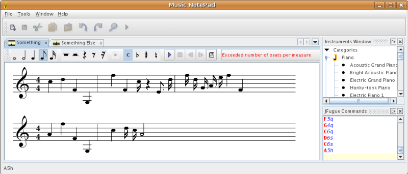

Welcome to the JFugue Music NotePad!
The aim of this open source project is to provide
a simple standalone application for composing music
and generating MIDI files. The underlying functionality provided
by this application comes
from its reliance on the JFugue API. The JFugue API
provides a simple yet powerful set of classes for playing and saving MIDI files. The
user interface that is built on top of this API is based on the
NetBeans Platform.
All
that the user interface does is enable the user to generate JFugue music strings, without
needing to understand what they are, how they work, or what they're for. For example, when a quarter note
is dragged to the "E" line in the clef register of the music sheet, a string consisting
of "E5q" is generated in the Editor (right side of the screen, below the Palette).
The JFugue API knows what to do with this string and,
when File > Play is selected, the JFugue API plays the note. When File > Save is selected,
the complete content of the Editor, which contains all the JFugue music strings in the
order in which they were added, is played and then
saved as a MIDI file. When a new instrument is selected, a related string is added to the editor,
and all subsequent notes are played by the last selected instrument.
A screenshot of the user interface:
(more screenshots are available by clicking on the item "Documents & files", in the navigator on the left side)

The application currently lets you do all of the following:
- Create new music sheets. Choose File | New to create your first music sheet. A wizard appears, make
your selections, and click Finish. You now have a music sheet. You can create multiple music sheets; all actions
you perform apply to the current music sheet.
- Add notes to the music sheet. Click a note in the toolbar, set (if applicable) whether a sharp
or flat should be applied, and then click the music sheet. You have now added a note to the music sheet. The
application prevents you from adding a note if doing so would result in the added note exceeding the number
of beats in the measure, as shown in the screenshot above, via a red message in the toolbar.
- Change notes. Select one or more notes with your mouse. Notice that the selected notes are now red.
Now click the Up arrow and Down arrow to move the notes up and down. Click the Left arrow and Right arrow
to increase or decrease the duration of the selected notes.
- Delete notes. Select one or more notes with your mouse. Notice that the selected notes are now red.
Now click the Delete key and the selected notes are deleted, while the remaining ones are redistributed.
- Change instruments. Right-click an instrument in the Instruments window (if it is not open, go
to the Window menu to open it) and choose Select. You can also choose Sample, to hear a sample of the instrument.
Now, all notes dropped after you selected the instrument will be played by the instrument.
- View JFugue music strings. Open the JFugue Commands window and notice that all the instruments
and notes that you have selected have been generated there, with helpful syntax coloring. There is no need
for you to understand these strings, that's why you're using this application in the first place!
- Print music sheets. Choose File | Print. A Preview appears, from which you can print.
You might need to resize the application
a bit, because the size of the current music sheet determines the length and breadth of the print output.
- Play music. Click the Play button in the sheet's toolbar and the current music sheet is played.
- Save music. Click the Save button in the sheet's toolbar and the current music sheet is saved.
- Add plugins. If/when plugins for the application become available, simply choose Tools | Update Center
and then use the Update Center wizard to install the plugins.
Download the binary.
How to Install the JFugue Music NotePad
If you want to contribute code to this open source project, you are very welcome
to do so.
Please note: We have not moved to NetBeans Platform 6.0 yet.
There is a 6.0 brance, but it hasn't been merged into the trunk yet. The trunk is
still at 5.5 level.
Take the following steps to access the sources and to set them up:
- All the sources are in this open source project's
VCS. Go here
to see them. Go here
for information that you'll need for checking out the sources.
- Once you have checked out the sources, you will have three NetBeans projects: a main
project (a.k.a. a "module suite"), a module that provides functionality, and a module
that wraps the JFugue API.
- Start up NetBeans IDE 5.5. If there are problems
relating to conflicting dependencies or anything else, subscribe and write to
dev@nbjfuguesupport.dev.java.net.
- Run the module suite (called "Music NotePad").
- Because the JFugue API is bundled with the application, you should be able to play and
save the strings that you generate immediately. However, note the list of known shortcomings below.
- If you would like to generate a standalone application from the sources, with an
executable (or a JNLP web startable application), just right click the "Music NotePad" module
suite, and choose either "Create ZIP Distribution" or "Create JNLP Application". Then a complete
application, that will be able to exist as a first class application in your system, will
be generated for you.
The JFugue Music NotePad is Incomplete!
The JFugue Music NotePad is functional. However, it is very far from complete. What still needs
to be done (change the status and add your name if you are working or planning to work on one
or more of these or just write to the mailing list and say what you're planning to do):
All unresolved issues in Issuezilla for this project